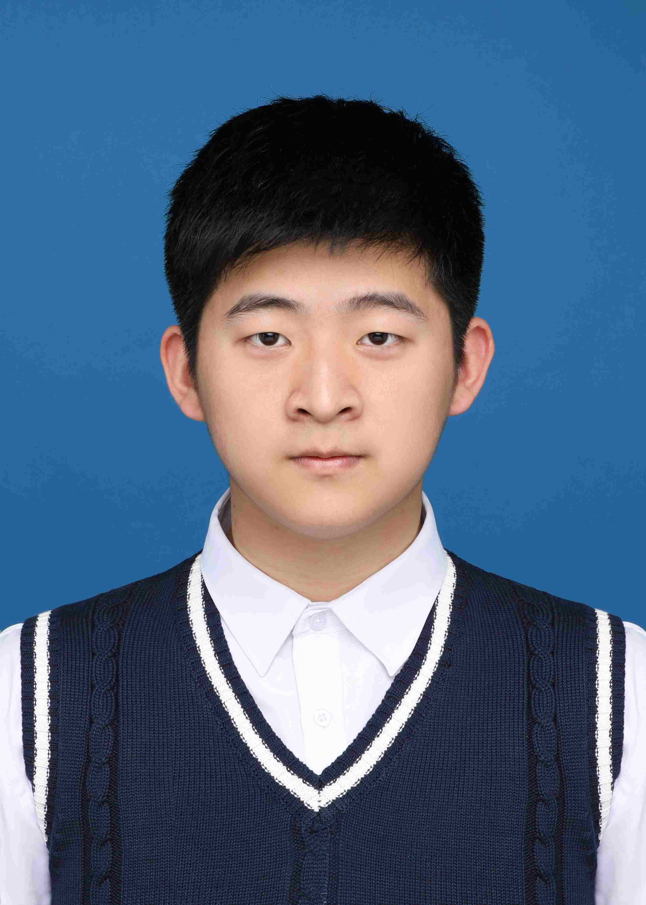

论文（最相关）
TurboRANSAC: A Fully GPU-Accelerated RANSAC Framework for Robust Estimation
科研经历（进行中）
可微 one-pass 混合渲染：3DGS + 纹理 Mesh 统一框架（CUDA）
- 研发 3D Gaussian Splatting 与纹理 Mesh 的统一 one-pass 可微混合渲染框架（CUDA）。
- 将三角形作为原生 primitive，与高斯在同一 tile 队列中进行 key 排序与融合渲染，支持端到端反向传播（含纹理参数梯度）。
- 围绕画质（PSNR）与性能（FPS）进行系统性评测与优化。
自动驾驶多模态可复现训练 / 评测框架（Bilateral Driving 主干）
- 项目地点：清华大学智能产业研究院（Institute for AI Industry Research, Tsinghua University，AIR）。
- 目标：将 Camera / LiDAR / Radar 与畸变相机渲染等能力统一到“一键训练 + 一键评测”的可复现工程框架中，并输出可用于仿真的多模态渲染结果。
- 审稿关键矛盾：外观分支不污染物理模态；渲染层面使用统一数学法则 + 模态定制高效实现，避免“缝合怪”。
- 效率主线：借鉴 PackNet 思想做恒定容量的多模态融合（共享表示池上学习 gating/mask），并探索 Sobolev/Laplacian 等预条件以加速、稳定优化收敛。
主动视角采集 + 3D Gaussian Splatting 的语义目标重建（Habitat/Replica）
- 构建“主动导航采集 + 3DGS 重建”的端到端系统，面向语义目标（如 chair/bed/toilet）提升目标区域重建质量。
- 提出导航-重建解耦的 Two-Pass 流程：策略在原生观测下生成轨迹；随后在真鱼眼相机与 BVH/Warp Ray-Tracing 深度监督下重放导出 RGB/Depth/Pose/Hit-mask，保证像素级对齐与几何一致性。
- 建立覆盖率感知评估协议（Coverage@1m、PSNR_all/PSNR_covered、Target coverage 等），降低评测偏置与不可复现风险。
- 内部实验（固定 seeds、全量 test/target views）显示在目标覆盖率接近 baseline 的情况下，目标区域重建质量显著提升（Target PSNR_covered@1m 约 +9 dB）。
2DGUT：Distortion-Robust Surface World Representation（3DGUT 项目）
- 面向 fisheye / 强畸变相机，提出并实现 2DGUT：将 Unscented Transform（UT）投影与 ray-plane surfel primitive 集成到 Gaussian Splatting 重建管线，提升非线性投影下几何与训练稳定性。
- 设计并落地分阶段训练流程（transfer → surface refine → metric recover）及评测协议（PSNR/SSIM/LPIPS + 几何指标）。
- 在 Lego fisheye（180°）上将 PSNR 从 22.48 提升到 31.65；在 matched evaluator 下相对 canonical 2DGS（no-UT）达到 31.83 vs 28.14（+3.69 dB）。
- 在 ScanNet++ DSLR 多场景实验中取得稳定增益（主场景最高约 +1.36 dB，新增 3 场景均为正增益），并完成可复现实验日志与可视化/消融分析。
校外科研
-
清华大学智能产业研究院（AIR）校外科研
参与自动驾驶仿真与多模态重建系统研发，主要负责 LiDAR 模块开发、Radar 最终整合与 GUT 多模态联调，并完成可复现实验与指标分析。
学术服务
- 担任 ICLR 2026 Trustworthy AI Workshop 审稿人（Reviewer）。
竞赛与奖项
- 全国大学生数学建模竞赛（2025）— 上海赛区省三等奖（队长）。
- 美国大学生数学建模竞赛（MCM/ICM）（2026）— M 奖（Meritorious Winner）。
- 大辛庄陶片拼合 AI 挑战赛（Kaggle）
个人项目
- RISC-V 汇编器 — 使用 C 语言独立实现。
- ChaCha20 高性能优化 — 使用 CUDA 与底层优化提升性能。